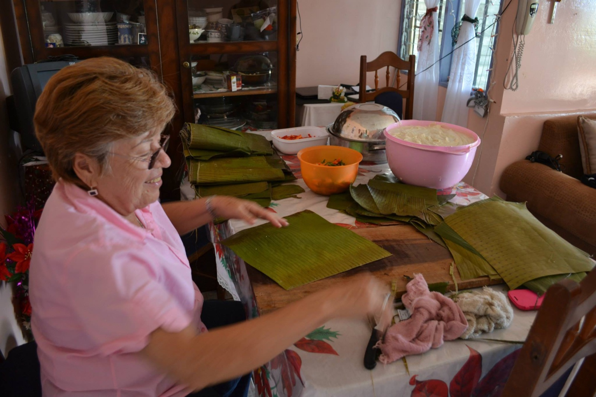
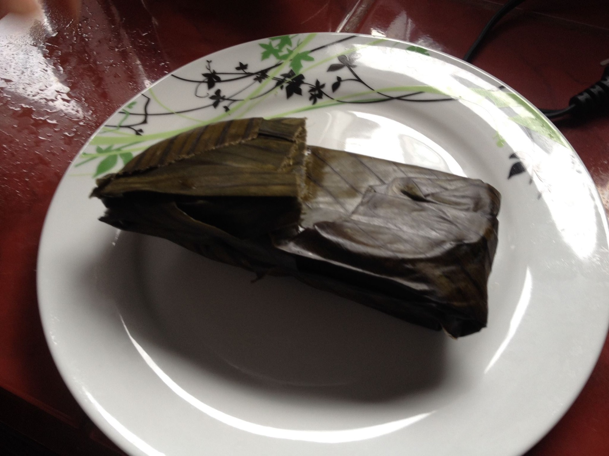
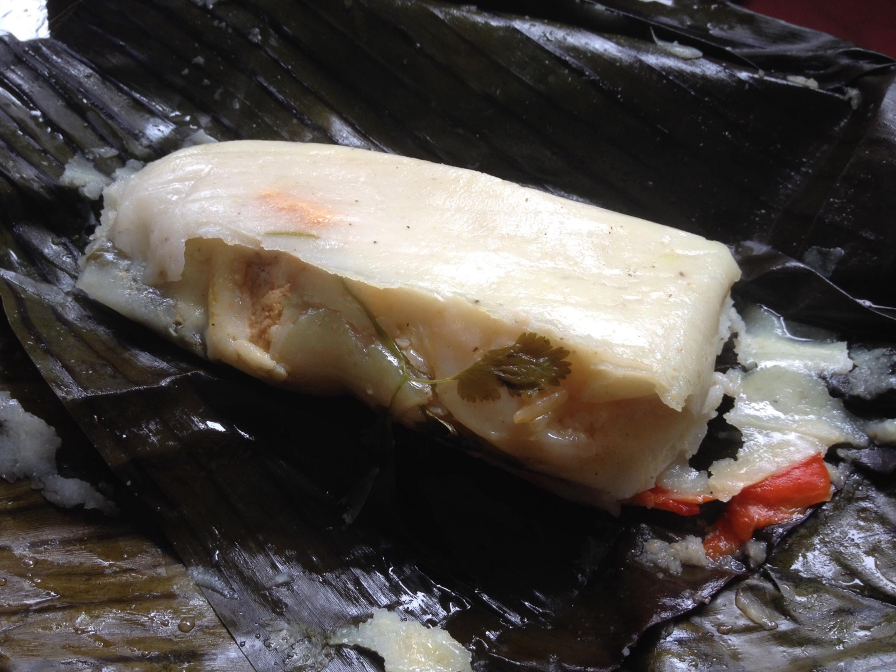

Costa Rica es uno de los países más prósperos de Centroamérica y la Navidad es el evento del año. La mayoría de la población es católica, y el cristianismo está hondamente arraigado en la cultura. Diciembre de 2013 fue mi primera temporada navideña en Costa Rica desde que llegué.
Festival de la Luz
Cada temporada navideña, la capital, San José, organiza un desfile llamado Festival de la Luz. Carrozas cubiertas de luces recorren el centro y la gente se concentra a los lados de la calle. Para alguien acostumbrado a Japón, recuerda a un desfile de iluminación navideña.

El tamal: la comida navideña de Costa Rica
El plato imprescindible en la mesa navideña es el tamal. Se mezcla masa de maíz con aceite, se le agrega arroz, carne y verduras, se envuelve en hoja de plátano y se cocina al vapor. El sabor varía de familia a familia, y se siguen comiendo hasta entrado el año nuevo. Para los costarricenses, los tamales son literalmente "el sabor de la Navidad".

Podría compararse al osechi-ryōri, la comida que las familias japonesas preparan para Año Nuevo. Perdí la cuenta de cuántas veces escuché eso de "este año los tamales de mi mamá son los mejores".


Corridas de toros y pólvora para Año Nuevo
Cuando termina la Navidad, empiezan las corridas de toros que se transmiten en vivo por televisión todos los días. A diferencia del estilo español, son una fiesta donde jóvenes provocan al toro y huyen corriendo. No se mata al toro — la gracia está en ver cómo zarandean a las personas.
Al llegar el año nuevo, la pólvora retumba día y noche. El opuesto exacto del año nuevo silencioso de Japón: un comienzo de año ruidosísimo. El 1 de enero es feriado, pero del 2 en adelante todo vuelve a la normalidad.
En Japón hay esa idea de que "el fin de año debe ser tranquilo", pero en Costa Rica es lo contrario. Suena la pólvora, se asa carne, las familias se reúnen y arman bulla. No sé cuál es "mejor", pero esa energía me daba un poco de envidia.